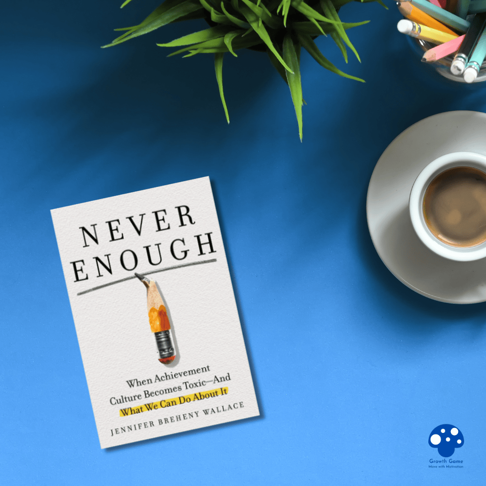

รีวิวหนังสือ The Score: How to Stop Playing Somebody Else’s Game
เป็นหนังสือที่เขียนโดย อ.วิชาปรัชญา ที่ตั้งคำถามกับเราทุกวันนี้ว่าเราหมกมุ่นกับตัวเลข Score หรือ “แต้ม” มากเกินไปหรือเปล่า อ่านแล้วได้ทบทวน มองย้อนกลับมาที่ตัวเ…
Read →
3 วิธี “ทำให้เกมมิฟิเคชันในห้องเรียนพัง” (โดยไม่รู้ตัว)
เกมมิฟิเคชันทำให้ห้องเรียนสนุก…แต่ครูจำนวนไม่น้อยกำลังทำให้มัน “พัง” อยู่โดยไม่รู้ตัว ตอนนี้เกมมิฟิเคชันถูกนำมาใช้ในห้องเรียนมากขึ้นเพราะมันช่วยให้ห้องเรียนสนุก…
Read →
สูตรโกง ในการออกแบบเกมมิฟิเคชัน
ไปเจอคำพูดนี้มาแล้วชอบมากครับ เลยอยากเอามาแบ่งปันให้ฟังกันครับ . “คุณไม่จำเป็นต้องเป็นผู้เชี่ยวชาญด้านเกม แค่ฟังเสียงของเหล่าเกมเมอร์ Gen Z ในทีมของคุณ แม้พวกเข…
Read →3 ด้านมืด ของGamification : ผลกระทบเชิงลบของการใช้ Gamification
3 ด้านมืด ของGamification : ผลกระทบเชิงลบของการใช้ Gamificationตอนนี้เราพบเห็นการใช้เกมมาปรับใช้ในสิ่งต่าง ๆ รอบตัวเรามากขึ้น ไม่ว่าจะเป็นเกมเพื่อการเรียนรู้ หร…
Read →ออมเงินไม่ยาก ถ้าทำให้มันเป็นเกม : ไอเดียดี ๆ จาก Flourish Fi
ทุกท่านก็คงทราบกันดีนะครับว่า การออมเงินนั้นเป็นเรื่องสำคัญ ซึ่งความท้าทายไม่ได้อยู่ที่แค่ว่าไม่มีความรู้ แต่ยังไปถึงการสร้างวินัยและแรงจูงใจให้กับตัวเองด้วย ซึ…
Read →เมื่อสงครามกลายเป็นเกม: ระบบแต้มรางวัลของกองทัพยูเครน
วันสองวันมานี้ หลายท่านอาจได้ข่าวเรื่องที่ยูเครนส่งโดรนถล่มฐานทัพรัสเซีย ซึ่งสร้างความเสียหายให้กับรัสเซียมากเลยทีเดียว มันทำให้ผมนึกถึงอีกข่าวที่เพิ่งออกมาเมื่…
Read →
เมื่อ Badge ที่เคยปัง…กลายเป็นพังจนไม่มีค่า – กรณีศึกษาที่สอนให้กล้ายอมปล่อย
LinkedIn เป็น platform ชั้นนำอีกแห่งที่นำเกมมิฟิเคชันมาใช้ในการจูงใจผู้ใช้ให้มีส่วนร่วม แต่ก็ใช่ว่า ทุกอย่างที่ LinkedIn ทำจะประสบความสำเร็จ วันนี้ลองมาคุยกันถึ…
Read →Mental Model คิดให้คม ตัดสินใจให้เฉียบ! (ตอนที่ 4)
ไม่ได้เขียนเรื่อง Mental Model มานาน วันนี้มาต่อกันนะครับ ขอเกริ่นอีกนิดหนึ่งว่า Mental Model คืออะไร แบบจำลองทางความคิด เป็นหลักการกว้าง ๆ ที่ช่วยเปิดมุมมองให้…
Read →กติกาเปลี่ยนนิด พฤติกรรมเปลี่ยนมาก: เมื่อทีมฟุตบอลที่อยากเข้ารอบ ต้องยิงประตูตัวเอง
การออกแบบกติกาและการให้แต้มเป็นเรื่องท้าทายที่สำคัญในหลายวงการ ไม่ใช่แค่เกมหรือเกมมิฟิเคชัน แต่รวมถึงวงการกีฬาและอื่น ๆ ด้วย ซึ่งความท้าทายหลักคือ การทำให้กติกา…
Read →
รีวิวหนังสือ: Never Enough โดย Jennifer Breheny Wallace
ผมเพิ่งอ่านหนังสือเรื่อง Never Enough ของ Jennifer Breheny Wallace จบไปครับ แบบว่าอ่านแล้วสะท้อนใจมาก 555 หนังสือว่าด้วยสังคมของเรายุคนี้ครับ ที่เต็มไปด้วยสิ่งท…
Read →